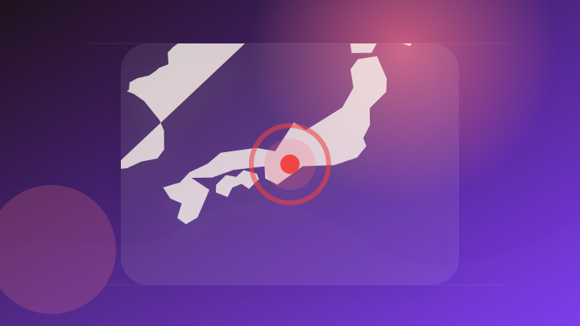
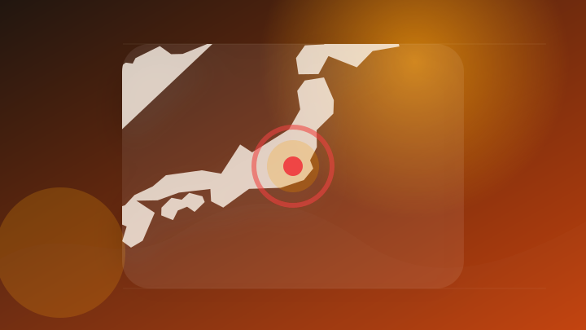
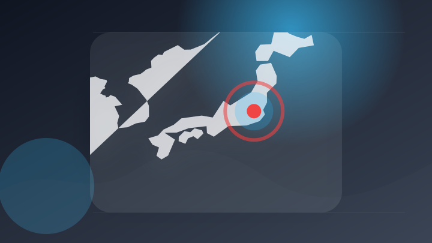
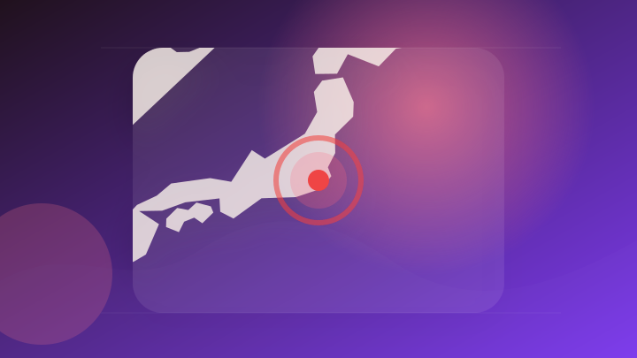

AI
3 topics
政治
3 topics
社会
5 topics

社会 大手報道 報道確認 要注意
三重県で交通死亡事故が急増…県警が出した答えは「赤色灯フル回転」
注目ポイント注目度 70点
社会 配信記事 速報・続報待ち 要注意
民家の庭先に倒れていた男性、搬送先で死亡確認 「物損事故起こした」と通報、車が縁石に乗り上げる事故
注目ポイント注目度 67点

社会 大手報道 報道確認 要注意
埼玉・飯能の高麗川で20代女性が流されたか 搬送時は心肺停止 [埼玉県]
注目ポイント注目度 64点
社会 配信記事 速報・続報待ち 動向確認
もし「裁判員」に選ばれたら？やりたくなかった人は約40％…それでも約97％が「よい経験だった」と答えた理由とは？
注目ポイント注目度 61点
社会 配信記事 速報・続報待ち 動向確認
2Pac殺害裁判──本誌が選ぶ、事件を動かした11人。うち5人はもう死んでいる
注目ポイント注目度 61点
事件・事故
1 topics
芸能人の結婚・離婚・交際
1 topics
災害
6 topics
災害 配信記事 速報・続報待ち 要注意
千葉県内で死者10人に 30代男性が一酸化炭素中毒で死亡 停電により室内で発電機を使用 豪雨災害と関連を調査
注目ポイント注目度 100点
災害 大手報道 複数社で確認 要注意
10人死亡 29人重軽傷に 千葉・記録的豪雨から3日 住宅の損壊や床上・床下浸水1541棟 千葉県は国に激甚災害への指定を要請する方針
10人死亡 29人重軽傷に 千葉・記録的豪雨から3日 住宅の損壊や床上・床下浸水1541棟 千葉県は国に激甚災害へ…
注目ポイント独立2媒体｜注目度 95点
災害 大手報道 報道確認 要注意
インドネシアのＭ７・７地震、死者５３人に…１５日午前６時から１６日夕までに１０００回の地震を観測
注目ポイント注目度 70点

災害 大手報道 報道確認 要注意
【台風のたまご】トリプル台風後の「熱帯低気圧（TD）」発生 「太平洋高気圧」の勢力復活へ 日本への影響は? 27日までの予想シミュレーション ※17日午前9時更新
【台風のたまご】トリプル台風後の「熱帯低気圧（TD）」発生 「太平洋高気圧」の勢力復活へ 日本への影響は? 27日…
注目ポイント注目度 70点

災害 大手報道 報道確認 要注意
いつもと違う今年の夏 異例の逆走台風と千葉豪雨はなぜ起きた？カギはいつもの位置にない“夏の太平洋高気圧”【SUNトピ】
いつもと違う今年の夏 異例の逆走台風と千葉豪雨はなぜ起きた？カギはいつもの位置にない“夏の太平洋高気圧”【SUNト…
注目ポイント注目度 70点
災害 配信記事 速報・続報待ち 要注意
「異例の進路」台風１５号、関東地方を東から西へ横断…浸水や河川の増水・氾濫への警戒呼びかけ（読売新聞オンライン）
注目ポイント注目度 67点